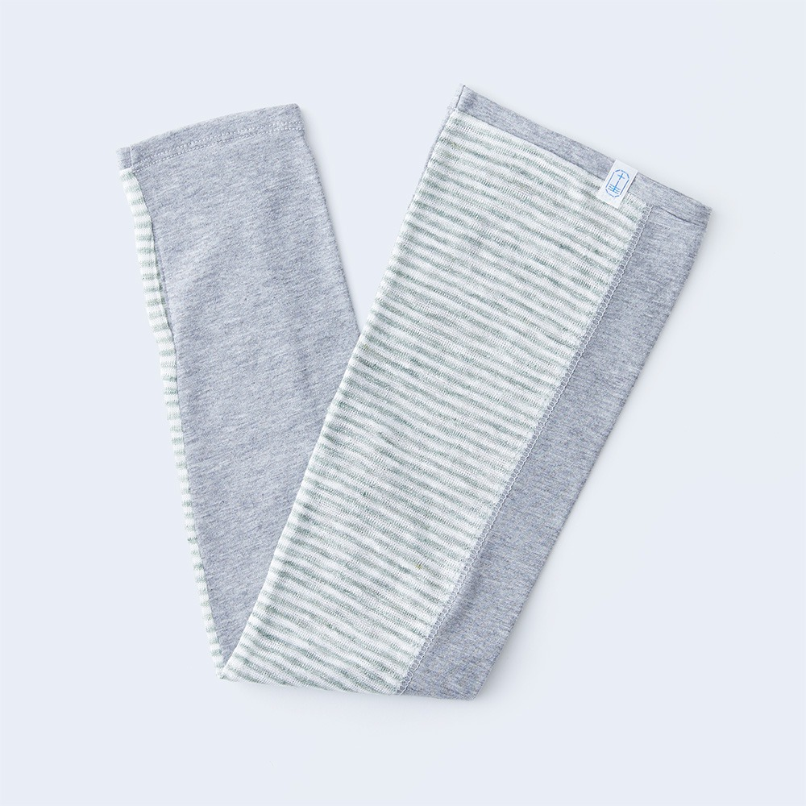

Префектура Кагава · Хигасикагава · Перчатки
«tet.»: бренд, который родился в городе перчаток
Почти все японские перчатки шьют в Хигасикагаве, и именно здесь появился бренд tet. Его летние вещи защищают руки от солнца и при этом остаются приятными на ощупь.
Бренд
Город, где шьют перчатки
Хигасикагава в Кагаве это перчаточный город: на него приходится больше девяноста процентов отечественного производства перчаток. Бренд tet. вырос здесь же и делает собственные вещи, связанные с рукой. На сайте бренда есть разделы о нём самом, новостях, изделиях и услугах, лаборатории и магазинах, где продаются его работы.
20 июня 2017 года tet. представил летнюю линию: изделия из натуральной ткани, которая хорошо впитывает влагу, пропускает воздух и заодно прикрывает кожу от ультрафиолета. В линии две вещи, «sunny cloth» за 5 940 иен и «sunny knit» за 4 320 иен, и тогда же сообщалось, что продавать их будут постепенно во всех магазинах страны и в интернет-магазине бренда.

Сегодня за изделиями бренда удобно следить на его сайте: для летних вещей с защитой от ультрафиолета в интернет-магазине отведён отдельный раздел. Справки по телефону даёт отдел tet. компании «Эйт-ван».
Бренд tet.
- Название
- tet.
- Телефон
- +81 879-25-3010, отдел tet. компании «Эйт-ван»
- Сайт
- te-t.jp
- Интернет-магазин
- store.te-t.jp